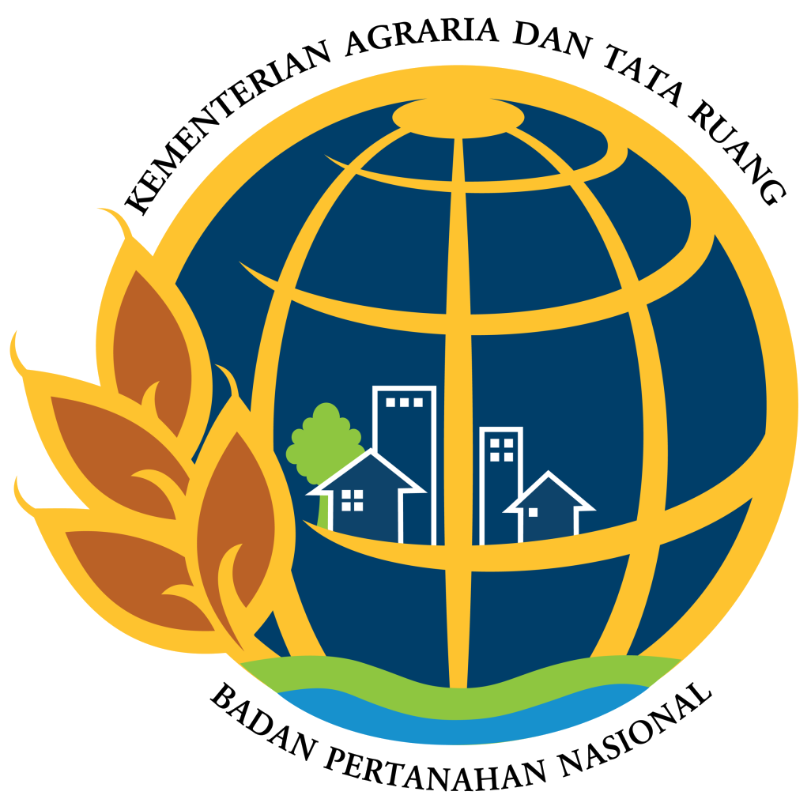

KREDIBILITAS INSTITUSI • MITRA PERBANKAN & BUMN
Dipercaya Lembaga Keuangan, BUMN & Instansi Pemerintah
Dipercaya oleh institusi perbankan nasional terdaftar OJK, kementerian negara, dan BUMN strategis untuk opini penilaian aset independen berstandar SPI dan KEPI.
Bank BRI
Bank BCA
Bank Banten
Bank BTN
Kasikornbank
Bank BJB
PT PLN
PT Pertamina
Kementerian PU

ATR / BPN
SIG
Bio Farma
Terdaftar di 40+ Mitra Perbankan & Klien Institusi terkemuka di Indonesia.
Lihat Direktori 40+ Mitra →